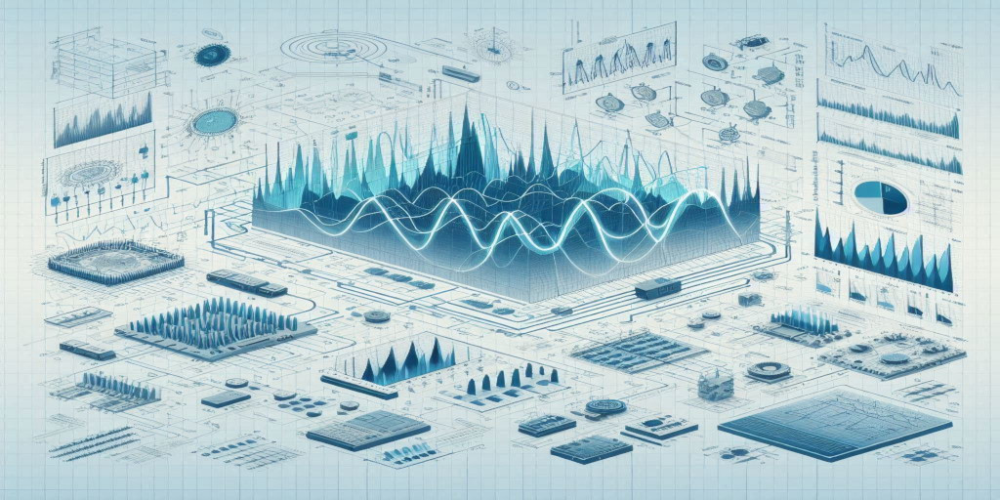
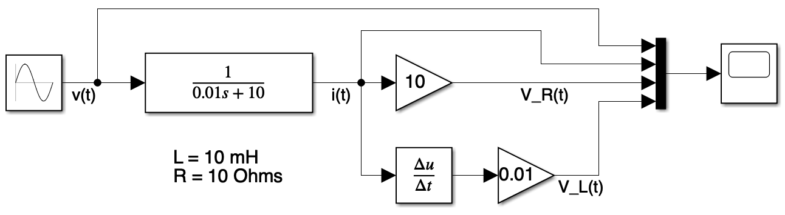
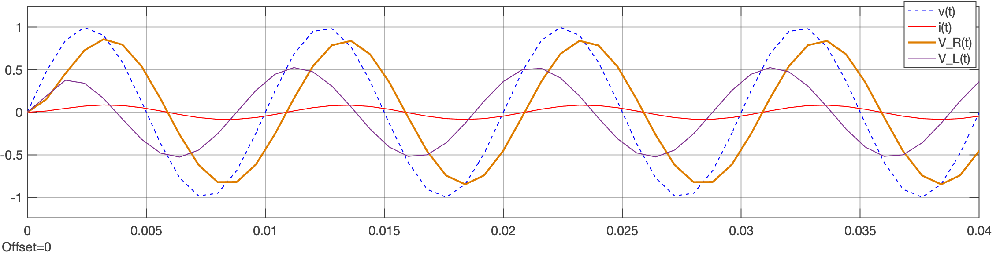
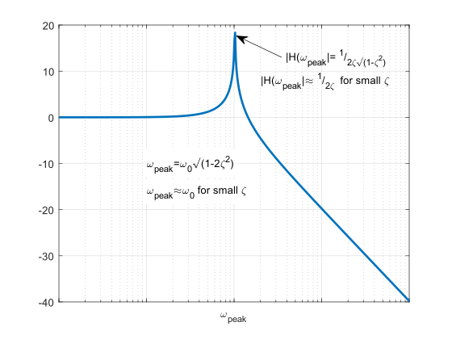
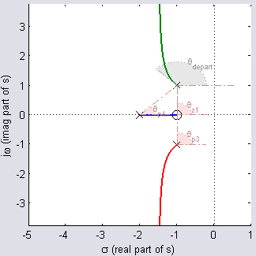
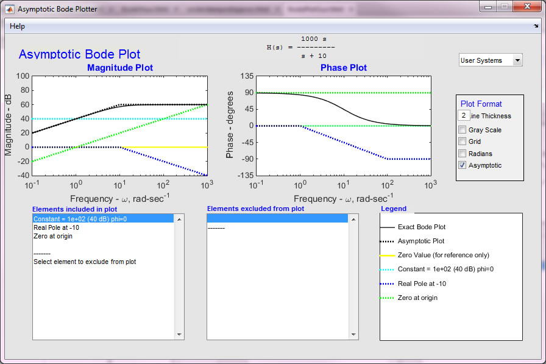
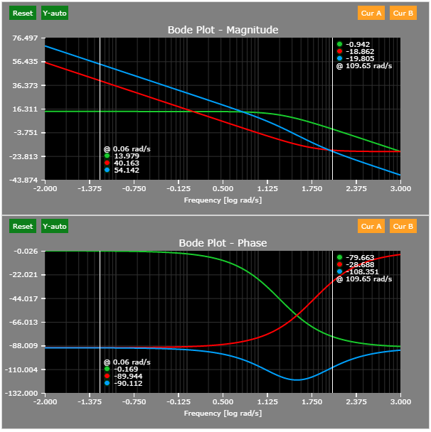
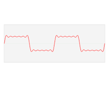

Gerado com IA, Copilot | Designer *
(ou "Análise de Sinais e de Sistemas, Modelagem de Sistemas")
Introdução.
Modelagem Matemática de Sistemas (ainda sem usar Laplace)
Parte 1: Intro (funções transferência, caixas de redução, sitemas lineares x não-lineares, resposta de sensor, sistema estável x instável, malha-aberta x malha-fechada, dinâmica de um sistema), Sistemas mecânicos (elementos básicos), equações associadas com forças (movimentos translacionais), equações associadas com torques (forças rotacionais), alguns sistemas mecânicos translacionais (equacionamento), sistemas mecânicos rotacionais (equacionamentos), momento de inércia, modelagem de alguns sistemas mecânicos, modelagem considerando Energia/Potência (elementos mecânicos que armazenam/dissipam energia).
Parte 2: Equacionamentos considerando Energia/Potência, Comparando sistemas elétricos x mecânicos, modelagem de sistemas elétricos, modelagem sistema térmico.
Transformada de Laplace (voltado para modelagem de sistemas).
Expansão em frações parciais --> The Inverse Laplace Transform by Partial Fraction Expansion (+ soluções usando Matlab).
Modelagem usando Transformada de Laplace
Modelagem usando Transformada de Laplace:
Arquivos associados com modelagem de circuito RL ( circuito_RL.slx ) (tensão de entrada x corrente x ddp_resistor x ddp_indutor):
| Modelo | Scope (resultado) |
|---|---|
 |  |
Arquivos associados com modelagem motor CC usando Matlab/Simulink (tensão de entrada x velocidade); ( motor_DC_Vel.slx + init_motor_velocidade.m + motor_DC_Vel_teste_degrau.slx )
Arquivos associados com modelagem motor CC (tensão de entrada x posição angular). ( + init_motor_posicao.m )
Usando MATLAB
Sugestão de Instalação (direcionado para área de Controle Automátoico);
MATLAB Guide (13,4 Mbytes, 44 pp.)
😃 MATLAB fácil (página WEB) ou versão PDF (438 Kbytes, 11 pp.);
📈 Gráficos usando MATLAB (922 Kbytes, 9 pp.);
Operações com Matrizes (1,7 Mbytes, 16 pp.)
Exemplos usando Matlab/Simulink: System Modeling (Michigan/Carnegie Melon/Detroit Mercy).
Modelagem Aproximada de Processos Industriais (em edição 🚧) Baseado no Cap. 3 de: GARCIA, Claudio. Controle de processos industriais: estratégias convencionais. Editora Blucher, 2017. Amostra: Cap. 1: Introdução e definições gerais).
Modelagem de circuitos baseados em Amplificadores Operacionais:
Respostas Transitórias de Sistemas Lineares
Exemplo de modelagem de sistema térmico.
Trabalho: Modelagem Aproximada de um Sistema de Automação Industrial.
Second Order Systems, Interactive (Swarthmore College, Dept. of Eng., acessado em 13/06/2024).

Aproximação de Padé (atrasos no tempo em sistemas de controle).
Trabalho deste item (Avaliação: 2025/1).
Lugar Geométrico das Raízes (ou root-locus)
📈 Simulações usando Matlab para enteder relação Root-Locus
😯 Mais exemplos (incluindo animação gráfica) de traçados de Root-Loucs e cálculos dos ângulos de partida das assíntotas, ponto de partida da assíntota, pontos de partida e de chegada num Root-Loucs (aula de 03/05/2024).
Derivation of Root Locus Rules (Swarthmore College, Dept. of Eng., acessado em 13/06/2024).

Drawing the root locus (Swarthmore College, Dept. of Eng., acessado em 13/06/2024).
Exercícios/Trabalho Extra-Classe sobre Aplicação de Root-Locus (16/04/2026).
Trabalho associado com Root Locus (Avaliação: 2025/1).
BodePlotGui: A Tool for Generating Asymptotic Bode Diagrams.

Exemplo de uso/aplicação de Diagrama de Bode (ver trecho do video: [0:00 - 13:00] minutos): How to design and implement a digital low-pass filter on an Arduino, 20/06/2021, de Curio Res - material em inglês, mas ótimas animações enfatizando uso, papel da magnitude e do atraso num filtro passa-baixas (usado como exemplo) (Acessado em 20/05/2024).
Bode Plot Engine (MIT) (acessível em 13/06/2024).

Demo (com simulações) do MIT: FOURIER SERIES DEMO (acessado em 13/06/2024).
Sumário de Identidades Trigonométricas (Clark University) (acessado em 13/06/2024).
Wikipédia: Série de Fourier:

Trabalho sobre Série de Fourier (avaliação de 2025/1).
Outros:
🌊 Fernando Passold 📬 ,